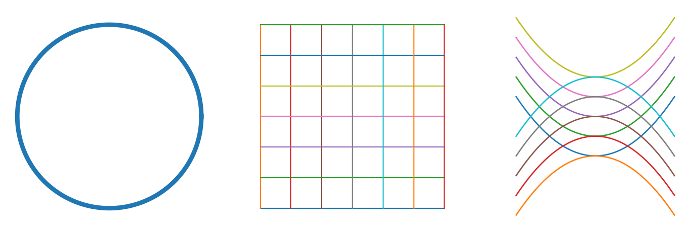
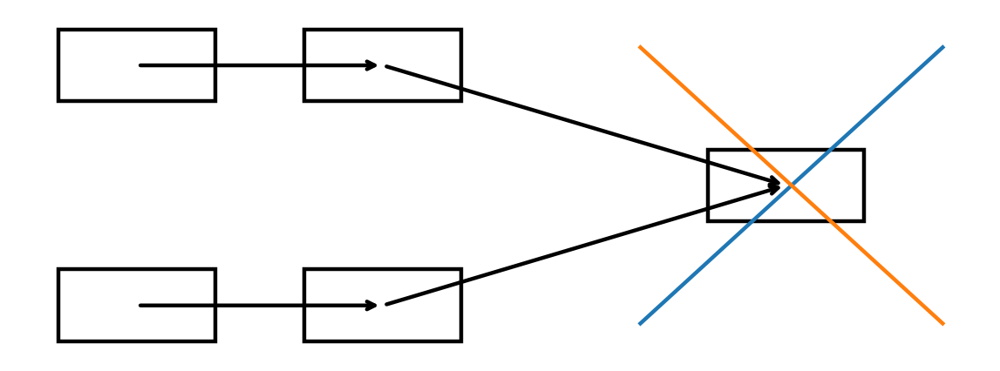

Education of Potential
The test of the path: opening possibility without stealing the distance by which understanding forms.
Read the chapter
The applications do not prove the theory. They test transfer between idea and world.
This page is in English. The language switch points to the parallel page when one exists; source documents are kept unchanged.
The test of the path: opening possibility without stealing the distance by which understanding forms.
Read the chapter
Source–form–medium: preserving living source against market, canon, and AI extraction.
Read the chapterVoice, time, and listening: why not every meaning can be shortened or measured.
Read the chapterThe possibility to intervene is not yet care worthy of a living person.
Read the chapterHow society turns harm into form without making form into further violence.
Read the chapter
Truth, source, path, responsibility, and power — a cross-domain gate, not an appendix.
Open AI gate
Curvature, infinity, boundary, and horizon as a precision layer for potential.
Read the chapter
The story and the game as a test of AI, sealed endings, moral action, and living source.
Read the chapter
Field, symmetry, breaking, scale, and context: scientific terms must be explained or removed.
Read the chapterThe applied chapters are integrated into the full and tightened versions.

Terms from physics, computation and mathematics are used carefully as structural language, not metaphysical proof.
Sources and contextEvery formula or scientific term in the applied chapters should be read as a conceptual heuristic unless stated otherwise. The purpose is to test conceptual transfer, not to propose a new scientific law.
Sources and context